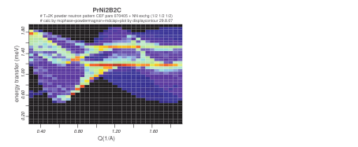
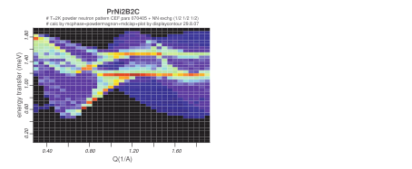
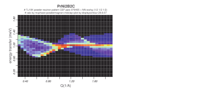
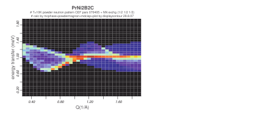

Next: Going beyond the Dipole Up: mcdiff - calculate and Previous: Formalism I - Resonant Contents Index
mcdiff uses the standard formalism to calculate the elastic neutron scattering cross section[32,8], which can be obtained from the elastic part of the double differential cross section:
In equation (46)
denotes the double differential
cross section, the number of atoms,  and the wave vectors of the incoming and
scattered neutron, respectively.
is the gyromagnetic ratio of the neutron and
fm is the classical
electron radius,
and the wave vectors of the incoming and
scattered neutron, respectively.
is the gyromagnetic ratio of the neutron and
fm is the classical
electron radius,
 the scattering vector,
the energy transfer and the
the scattering vector,
the energy transfer and the  are the nuclear and magnetic Van Hove scattering functions.
Both are a sum of elastic and inelastic contributions:
are the nuclear and magnetic Van Hove scattering functions.
Both are a sum of elastic and inelastic contributions:
 |
(46) | |||
|
(47) |
The nuclear elastic scattering can be split into a coherent and an incoherent part:
The nuclear elastic coherent scattering function is given by a product of lattice factor and nuclear structure factor NSF:
|
 | (49) | ||
|
(50) |
denotes the number of atoms in the basis and the sums run over
all reciprocal lattice vectors and over all atoms
in the unit cell (unit cell volume is ).
 ,
,  and  are the coherent scattering length, the unit cell
position vector and the Debye Waller factor of the atom
and  are the coherent scattering length, the unit cell
position vector and the Debye Waller factor of the atom  (
), respectively.
(
), respectively.
Similar, the magnetic elastic scattering function can be written as a product:
In dipole approximation the products
 are evaluated as follows
(see also appendix J):
are evaluated as follows
(see also appendix J):
[rare earth (in sipf file):]
[transition metals (
in sipf file) given (only) magnetic moments
in mcdiff.in:]
(i.e. a quenched orbital moment is assumed) [transition metals (
in mcdiff.in:]
Here  ,
,  ,
,
 ,
,
 and
and
 denote the
Landé factor, the form factor, the expectation value of the spin-, orbital- and total angular
momentum operator of the atom in the unit cell, respectively.
denote the
Landé factor, the form factor, the expectation value of the spin-, orbital- and total angular
momentum operator of the atom in the unit cell, respectively.
Program mcdiff calculates the scattering angle of a reflection according to
Nuclear elastic coherent and magnetic intensities are calculated according to:
|
(56) | |||
|
(57) | |||
|
 | (58) | ||
|
(59) | |||
|
(60) | |||
|
(61) | |||
|
(62) | |||
|
(63) | |||
|
(64) | |||
|
(65) | |||
|
(66) |
Mind: no absorption and extinction corrections are calculated.


![$F_d(Q) M_{d\alpha}= \mu_B\langle 2 S_{d\alpha} \rangle_{T,H}\langle j_0(Q) \ran...
... \rangle_{T,H}\left [ \langle j_0(Q) \rangle + \langle j_2(Q) \rangle \right ] $](img426.svg)